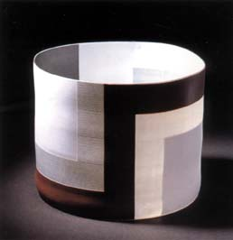
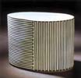
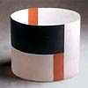
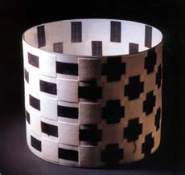
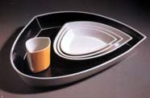

| Bodil Manz
Danish Eggshell Porcelain
Bodil
Manz has been known as a master of eggshell porcelain for
many years now.
Her near paper thin cast porcelain cylinders are so
translucent, you can sometimes even discern the light and shadow
passing through both walls of a pot.
Bodil Manz was born in Copenhagen in 1943. She studied
ceramics at the School of Arts & Craft in Copenhagen, then at
the Escuelo de Diseno y Artesanias in Mexico and Berkeley University
in California, USA. Her work is represented in the National Museum
of Sweden, the Danish Museum of Decorative Art and the Victoria
and Albert Museum.

Her
cylinders are slip cast porcelain, which she decorates with geometrical
patterns on both sides, applied with plain decals. The effect is
a pattern on the one side, offset by a shadow of a related pattern
on the other. Interior and exterior play off one another to and
merge form a complex whole. This is stunningly evident in the piece
on the left, where horizontal bands on the outside mix with the
shadow of vertical bands on the inside to form crosses.
Besides
her cylinders, Manz also designs tea and dinner sets and has made
large scale architectural pieces. Bodil Manz continues to produce
work in her studio in North Seeland. She is represented in the US
by Garth Clark Gallery
and in the UK by Galerie
Besson.
More Articles
More Pots of the Week
|